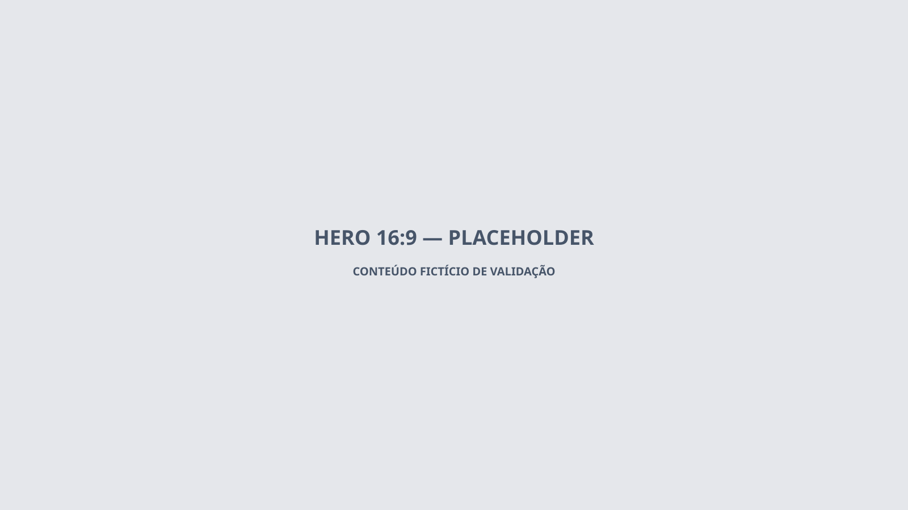

Parceiro fictício
Café Neblina Alta
Café parceiro fictício criado para validar página comercial, contato, roteiro e analytics do parceiro.
Visita registradaExperiências
Conteúdo comercial separado do template turístico.

Café parceiro fictício criado para validar página comercial, contato, roteiro e analytics do parceiro.
Visita registrada